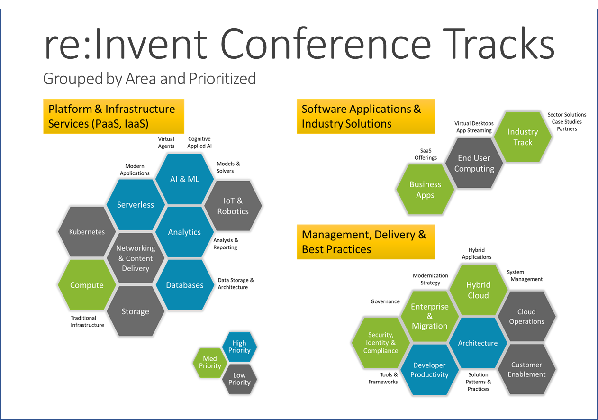
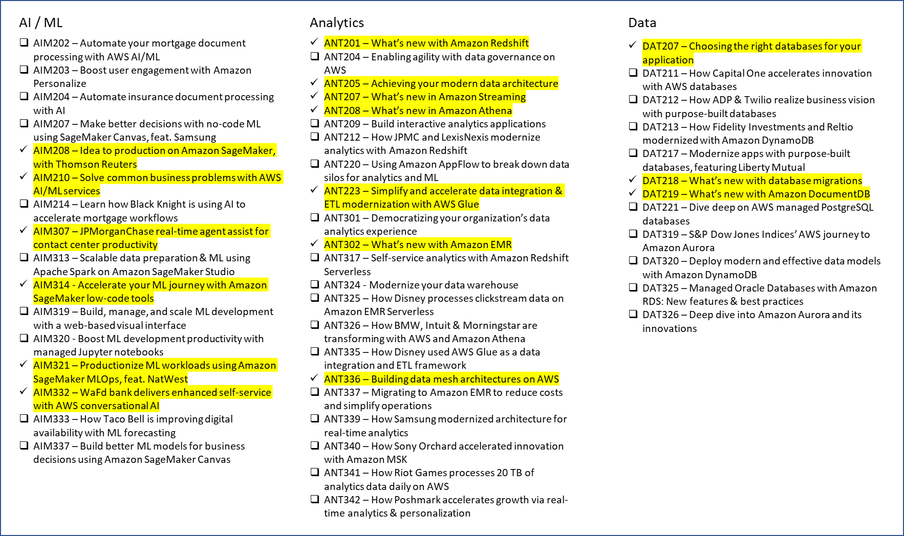
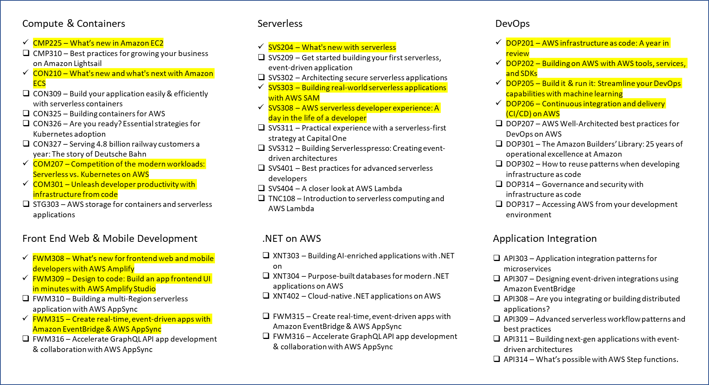
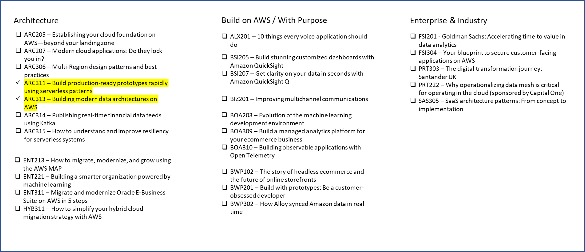

Hello AWS re:Invent 2022
What did I just do?
According to AWS re:Invent website, there are 50 content tracks and more than 2,000 sessions! The conference itself is spread over a “campus” of 6 resorts on opposite ends Las Vegas Strip. It’s been five years since my last AWS re:Invent conference, and if there is only one takeaway, it’s this: You Need a Plan.
My Goal
It’s been a couple of years since I worked with AWS. The pace of change happens at breakneck speed in the cloud, so it’s likely that what I worked with 2 years ago, would be a faint afterimage of AWS today.
Prioritize Conference Tracks
The graphic below is my attempt to make some sense out of the myriad of sessions listed in the conference catalog.

I’ve grouped them in three major areas
- Platform and Infrastructure Services
- Software Applications and Industry Solutions
- Management, Delivery, and Best Practices
My main focus would be on the next level of cloud architecture, staying away from the core Infrastructure pieces but instead prioritize serverless, platform, and analytics services. A recent article Ahead of re:Invent, Adam Selipsky hints at the AWS next-gen cloud hints at this trend, referring to it as the move from Classic to Next-Gen cloud. It also makes a go at leveraging AWS for another buzzword “Business Transformation”. The cloud’s move beyond infrastructure, requires a new method, where more focus is put on business change and “code” and less on the infrastructure it runs on. For those that know me, this is something I strongly believe in.
I built the graphic above so that each Hex is colored according to priority
- Teal (Top Priority) - Core Building Blocks of Modern Applications, Analytics, and Applied AI
- Green (Secondary Focus) - Enterprise Concerns and Key Case Studies for Various Industries
- Grey (Zero to no focus) - Unless there are major announcements during a keynote.
Prioritize Sessions
The next step was to drill down on the content tracks, and find those sessions that looked interesting, as well as highlight what’s new in some of the existing service. I created the following images showing the outcome of this exercise.
  
From those sessions above, I had to limit what I could realistically absorb and prioritize even further. To that end the highlighted sessions above from this set illustrate those sessions that I will be attending.
If you are interested, I’ve created a PDF of the sessions that I plan to view/attend, as well as those Keynote and Leadership sessions that will be broadcast to all Internet users. You can print it out and hightlight which sessions may be of interest to you.
I’ve made two PDF files available
- My sessions I plan on attending/viewing, and the day and times of the sessions.
- All of the sessions that I found interesting, and may review in the future.
Let’s Connect
If you are attending AWS re:Invent or noticed a session that I might have missed, you can reach out to me on:
- Mastodon - @mikelor@hachyderm.io
- LinkedIn - mlorengo
- Twitter - @mikelor
Cover Art?
The cover art of this blog post was courtesy of Open-AI Dalle-2. For the image i specified “Amazon re:Invent 2022 Conference in the style of Dali in Las Vegas”.